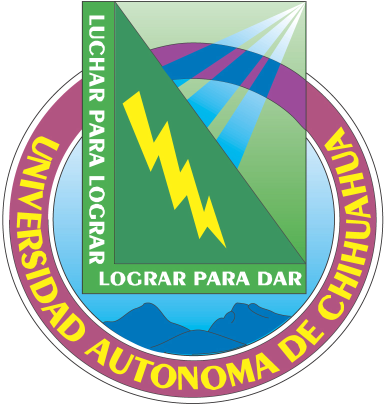
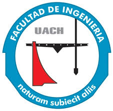

|  |
|
 |
| PROPÓSITO DEL CURSO | Aporta a los estudiantes en el contexto de los lenguajes de programación como las herramientas fundamentales de aplicación en la creación de programas computacionales y software. La asignatura le ofrece al estudiante el estudio de las características delos tres paradigmas tecnológicos más utilizados: orientado a objetos, funcional y lógico para que adquiera una visión y una metodología para el diseño de sistemas computacionales funcionales, interactivos y seguros, aplicando cualquiera de los paradigmas de una manera sistemática y efectiva para la mejor resolución del problema |
|---|
| FUENTES DE INFORMACIÓN | EVALUACIÓN DE LOS APRENDIZAJES |
|---|---|
|
1. Gabbrielli M. Programming Languages:
Principles and Paradigms. Springer, 2010. 2. Tucker A y Noonan R. Programming Languages. 2nd edtition, McGraw-Hill 2006, |
La acreditación del curso: • Promedio de Calificaciones parciales: 70% • Prácticas de laboratorio: 30%. |